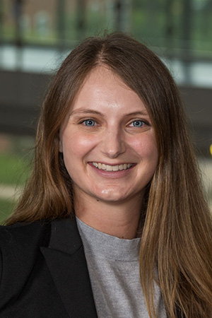

The Arhar Lab is a diverse team of students, majoring in biochemistry,
biology, forensic chemistry, and even psychology! Our goal is to make the
Arhar Lab a welcoming, inclusive, and safe environment for learning and
growing as scientists.

Taylor Arhar (she/her)
- B.S. Biochemistry, Loyola Marymount University
- Ph.D. Chemistry and Chemical Biology, University of California San
Francisco
Dr. Arhar has been an Assistant Professor at San José State University
since August 2023. At SJSU, she teaches biochemistry lecture and lab
courses. Before coming to SJSU, she taught general chemistry and
biochemistry at Beloit College from 2021-2023. Her favorite part of the
job is getting to work with her amazing students.
When she’s not at work, Dr. Arhar loves to get outside, read novels,
and spend time with her family and friends.